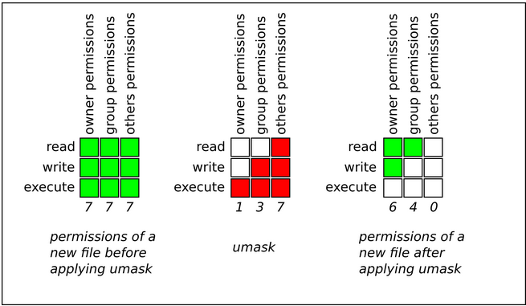
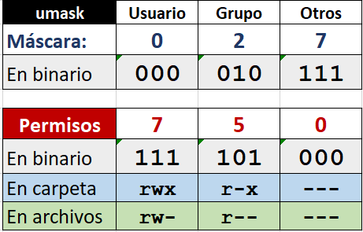
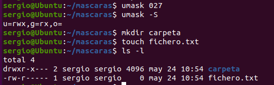
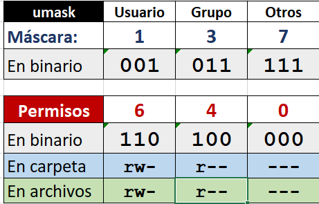
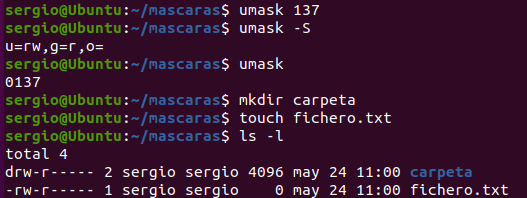
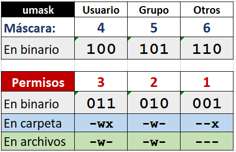
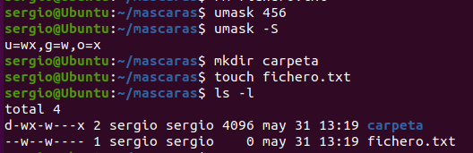

Permisos por Defecto - umask
Cuando creas un archivo o directorio nuevo, ¿qué permisos tiene por defecto? La respuesta está en umask.
umask (user file creation mask) es una máscara que determina qué permisos se quitan a los archivos y directorios recién creados.
Concepto clave
umask NO establece permisos, sino que define qué permisos NO se otorgarán por defecto.
Funcionamiento de umask
Antes de aplicar umask, Linux tiene permisos base diferentes para archivos y directorios:
| Tipo | Permisos base | Octal | Razón |
|---|---|---|---|
| Directorios | rwxrwxrwx |
777 | Necesitan todos los permisos disponibles |
| Archivos | rw-rw-rw- |
666 | Por seguridad, NO tienen ejecución por defecto |
¿Por qué 666 en archivos?
Los archivos normales NO deben ser ejecutables por defecto. La ejecución debe añadirse explícitamente si es necesario (por seguridad).
La operación umask
Más técnicamente (operación AND lógica):
Es decir, los permisos resultantes R son el resultado de conjunción bit a bit de los permisos predeterminados D y la negación bit a bit de la máscara del modo de creación de archivos. Se podría representar con el siguiente gráfico:
{kind=link}

Otra forma de calcular la máscara, sería hacer la complementaria y después para los archivos tener en cuenta que no pueden tener el permiso de ejecución:
{kind=link}

Ver y Establecer umask
Ver la umask actual
Salida típica:
Formato de 4 dígitos
umask se muestra con 4 dígitos (ej: 0022). El primer dígito (0) es para permisos especiales. Normalmente solo nos interesan los 3 últimos.
Cálculo de Permisos con umask
Umask común: 0022.Esta es la umask por defecto en la mayoría de sistemas Linux.
Para directorios
En binario:
111 111 111 (rwxrwxrwx = 777)
000 010 010 (umask 022)
----------- (NOT umask y luego AND)
111 101 101 (rwxr-xr-x = 755)
Para archivos
En binario:
110 110 110 (rw-rw-rw- = 666)
000 010 010 (umask 022)
----------- (NOT umask y luego AND)
110 100 100 (rw-r--r-- = 644)
Interpretación de umask
La umask indica qué permisos se quitan:
Umask 022 - Significado
```
0 2 2
│ │ │
│ │ └─ Otros: quitar escritura (2)
│ └─── Grupo: quitar escritura (2)
└───── Usuario: no quitar nada (0)
```
**Resultado:**
- **Usuario**: Todos los permisos disponibles (rwx para dirs, rw- para archivos)
- **Grupo**: Sin escritura (r-x para dirs, r-- para archivos)
- **Otros**: Sin escritura (r-x para dirs, r-- para archivos)
Ejemplos de umask
umask 0022 (por defecto)
| Tipo | Base | umask | Resultado | Simbólico |
|---|---|---|---|---|
| Directorio | 777 | 022 | 755 | rwxr-xr-x |
| Archivo | 666 | 022 | 644 | rw-r--r-- |
Uso: Usuario normal, archivos visibles por todos
umask 0027
0 2 7
│ │ │
│ │ └─ Otros: quitar rwx (7)
│ └─── Grupo: quitar escritura (2)
└───── Usuario: no quitar nada (0)
| Tipo | Base | umask | Resultado | Simbólico |
|---|---|---|---|---|
| Directorio | 777 | 027 | 750 | rwxr-x--- |
| Archivo | 666 | 027 | 640 | rw-r----- |
Uso: Archivos visibles por el grupo, ocultos al resto
{kind=link}

umask 0137 - No tiene mucho sentido de uso. Solo para uso didáctico
1 3 7
│ │ │
│ │ └─ Otros: quitar rwx (7)
│ └─── Grupo: quitar escritura y ejecución (3)
└───── Usuario: quitar ejecución (1)
| Tipo | Base | umask | Resultado | Simbólico |
|---|---|---|---|---|
| Directorio | 777 | 137 | 640 | rw-r----- |
| Archivo | 666 | 137 | 640 | rw-r----- |
{kind=link}

Uso: No tiene mucho sentido de uso. Solo para uso didáctico
{kind=link}

umask 0456 - No tiene mucho sentido de uso. Solo para uso didáctico
4 5 6
│ │ │
│ │ └─ Otros: quitar rwx (6)
│ └─── Grupo: quitar escritura (5)
└───── Usuario: no quitar nada (4)
| Tipo | Base | umask | Resultado | Simbólico |
|---|---|---|---|---|
| Directorio | 777 | 456 | 321 | -wx-w---x |
| Archivo | 666 | 456 | 220 | -w--w---- |
{kind=link}

Uso: No tiene mucho sentido de uso. Solo para uso didáctico
{kind=link}

umask 0077
0 7 7
│ │ │
│ │ └─ Otros: quitar rwx (7)
│ └─── Grupo: quitar rwx (7)
└───── Usuario: no quitar nada (0)
| Tipo | Base | umask | Resultado | Simbólico |
|---|---|---|---|---|
| Directorio | 777 | 077 | 700 | rwx------ |
| Archivo | 666 | 077 | 600 | rw------- |
Uso: Archivos completamente privados (máxima seguridad)
umask 0002
0 0 2
│ │ │
│ │ └─ Otros: quitar escritura (2)
│ └─── Grupo: no quitar nada (0)
└───── Usuario: no quitar nada (0)
| Tipo | Base | umask | Resultado | Simbólico |
|---|---|---|---|---|
| Directorio | 777 | 002 | 775 | rwxrwxr-x |
| Archivo | 666 | 002 | 664 | rw-rw-r-- |
Uso: Colaboración en grupo (grupo puede escribir)
umask 0000
| Tipo | Base | umask | Resultado | Simbólico |
|---|---|---|---|---|
| Directorio | 777 | 000 | 777 | rwxrwxrwx |
| Archivo | 666 | 000 | 666 | rw-rw-rw- |
Peligroso
Nunca uses umask 0000 en producción. Todos los archivos serían modificables por cualquiera.
Cambiar umask
Temporal (solo sesión actual)
Esta configuración se pierde al cerrar la terminal.
Verificar el cambio
Hacer umask Permanente
Para que la umask sea permanente, añádela a los archivos de configuración del shell.
Para Bash
Edita ~/.bashrc (configuración personal) o /etc/bash.bashrc (para todos):
Añade al final:
Guarda y recarga:
Para el sistema completo
Edita /etc/profile (afecta a todos los usuarios):
Añade:
Diferentes umask por usuario
Cada usuario puede tener su propia umask en su ~/.bashrc. Esto permite políticas de seguridad diferentes según el rol.
Tabla Resumen de umask Comunes
| umask | Directorios | Archivos | Uso típico |
|---|---|---|---|
| 0022 | rwxr-xr-x (755) |
rw-r--r-- (644) |
Por defecto, acceso público lectura |
| 0027 | rwxr-x--- (750) |
rw-r----- (640) |
Grupo puede leer, otros nada |
| 0077 | rwx------ (700) |
rw------- (600) |
Completamente privado |
| 0002 | rwxrwxr-x (775) |
rw-rw-r-- (664) |
Colaboración en grupo |
| 0007 | rwxrwx--- (770) |
rw-rw---- (660) |
Solo usuario y grupo |
| 0000 | rwxrwxrwx (777) |
rw-rw-rw- (666) |
Sin restricciones (peligroso) |
Casos de Uso Reales
Caso 1: Desarrollador en solitario
Resultado:
- Directorios: 700
- Archivos: 600
- Nadie más puede ver ni modificar
Caso 2: Equipo de desarrollo
Resultado:
- Directorios: 775
- Archivos: 664
- El grupo puede leer y escribir
Caso 3: Usuario normal
Resultado:
- Directorios: 755
- Archivos: 644
- Todos pueden leer, solo propietario escribe
Caso 4: Datos sensibles
Resultado:
- Directorios: 750
- Archivos: 640
- Otros usuarios no tienen acceso
Script de prueba
#!/bin/bash
echo "=== Prueba de umask ==="
echo ""
# Guardar umask original
ORIGINAL=$(umask)
# Probar diferentes umask
for MASK in 0022 0027 0077 0002; do
umask $MASK
echo "umask: $MASK"
# Crear archivo y directorio
touch "test_file_$MASK.txt"
mkdir "test_dir_$MASK"
# Mostrar permisos
ls -l "test_file_$MASK.txt" | awk '{print " Archivo:", $1}'
ls -ld "test_dir_$MASK" | awk '{print " Directorio:", $1}'
echo ""
done
# Restaurar umask original
umask $ORIGINAL
# Limpiar
rm test_file_*.txt
rmdir test_dir_*
echo "umask restaurada a: $ORIGINAL"
Salida esperada:
Ejercicios Prácticos
Ejercicio 1: Experimentar con umask
- Comprueba tu umask actual
- Cambia a umask 0027
- Crea un archivo y un directorio
- Verifica los permisos con
ls -l - Restaura la umask original
Ejercicio 2: Cálculo manual
Calcula los permisos resultantes para:
- umask 0037 en directorios
- umask 0037 en archivos
- umask 0002 en directorios
- umask 0002 en archivos
Ejercicio 3: umask permanente
- Edita tu
~/.bashrc - Añade
umask 0027al final - Recarga con
source ~/.bashrc - Abre nueva terminal y verifica que se mantiene
- Crea archivos y verifica permisos